Nouvelle contrée
Les Champs Mille-Fleurs
La huitième contrée, et la plus douce : des plaines entières couvertes de fleurs d'un bord à l'autre. Elle pousse là où sont les plaines, les plaines de tournesols et les prairies que la Plaine des Colosses n'a pas prises, et dans toutes les forêts de fleurs, par étendues de plusieurs centaines de blocs : sur la graine de test, 8 % de toutes les terres.
Presque partout, les fleurs sont rangées en bandes de couleur d'une dizaine de blocs qui suivent le terrain en longues courbes, comme les champs plantés au flanc d'une vallée : une bande rouge, puis rose, corail, abricot, or, citron, menthe, glacier, ciel, indigo, violet, fuchsia, et de nouveau rouge - un arc-en-ciel posé sur le sol, où deux bandes voisines sont toujours deux couleurs voisines. Chaque bande mêle toutes les fleurs de sa couleur : les douze nouvelles d'abord, et celles du jeu parmi elles - coquelicots et tulipes rouges dans le rouge, tulipes roses et pivoines dans le rose, pissenlits et tournesols dans l'or, bleuets dans l'indigo, alliums et lilas dans le violet -, avec çà et là un épi de deux blocs qui dépasse ; dans les bandes chaudes, des lits de pétales roses ou de fleurs sauvages dorées remplissent ce qui reste. Ailleurs, la contrée s'ouvre en prairies sauvages où toutes les couleurs se mélangent par touffes.

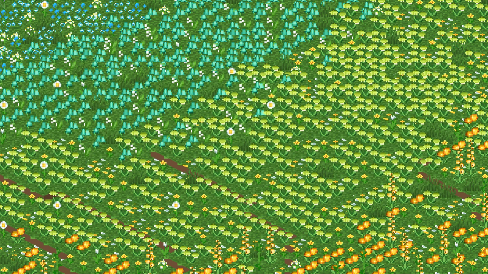
(agrandir l'image)
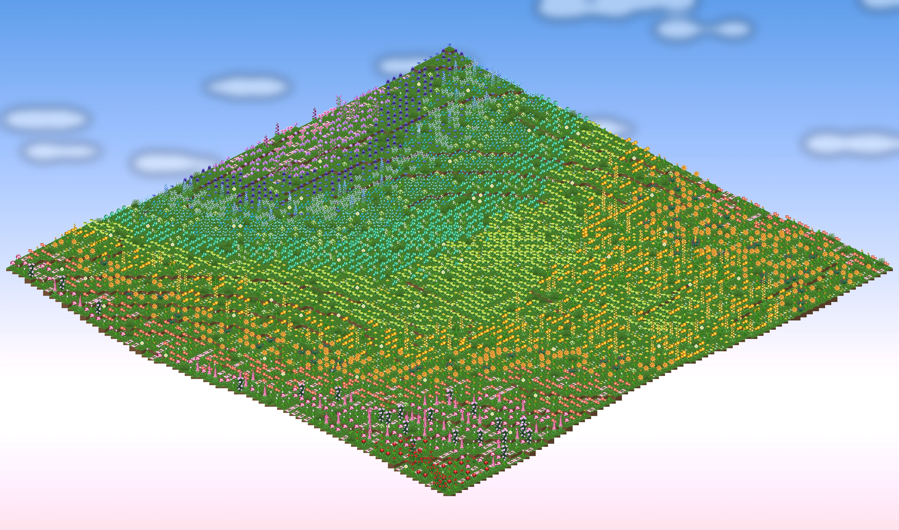
(agrandir l'image)Au milieu des fleurs : des glycines aux branches tordues sous des nuées de feuilles d'où pendent des rideaux de grappes lilas, des cerisiers en fleurs, et de petits étangs ronds semés de nénuphars et de lotus qui luisent doucement la nuit. Des pétales flottent dans l'air, des lucioles le soir, la musique est celle des cerisaies - et partout, des papillons. Comme toutes les contrées, elle ne pousse que sur les nouveaux chunks.
Les fleurs des champs
Douze fleurs d'un bloc, une par couleur du cercle, et quatre épis de deux blocs. Toutes se cueillent et se replantent, se mettent en pot, donnent leur teinture, attirent les abeilles, et vont dans un ragoût suspect.
| Fleur | Couleur | Teinture | Ragoût suspect |
|---|---|---|---|
| Tulipe braise | rouge braise | rouge | Résistance au feu |
| Pivoine aurore | rose | rose | Régénération |
| Renoncule corail | corail | rose | Saturation |
| Cosmos abricot | abricot | orange | Vitesse |
| Souci d'or | or | jaune | Célérité |
| Hellébore citron | citron | vert clair | Saut amélioré |
| Campanule menthe | menthe | cyan | Respiration aquatique |
| Lin des glaciers | bleu glacier | bleu clair | Chute lente |
| Myosotis | bleu ciel | bleu clair | Vision nocturne |
| Iris de nuit | indigo | bleu | Invisibilité |
| Crocus améthyste | violet | violet | Chance |
| Aster fuchsia | fuchsia | magenta | Absorption |
| Lupin rose épi, 2 blocs | rose | rose ×2 | — |
| Delphinium azur épi, 2 blocs | bleu ciel | bleu clair ×2 | — |
| Digitale pourpre épi, 2 blocs | fuchsia | magenta ×2 | — |
| Glaïeul doré épi, 2 blocs | or | jaune ×2 | — |
La glycine a son bois - bûche, planches, escalier, dalle, barrière, portillon - et sa pousse, qui donne le même arbre que les champs ; ses grappes s'allongent lentement vers le bas comme des lianes, et s'escaladent. Le lotus se pose sur l'eau comme un nénuphar et éclaire (niveau 7).
Les créatures des prés
Dix créatures paisibles, chez elles dans les Champs Mille-Fleurs et qu'on croise aussi dans les terres du jeu. Aucune n'attaque ; les oiseaux, le hérisson et le panda roux se reproduisent avec ce qu'ils mangent.

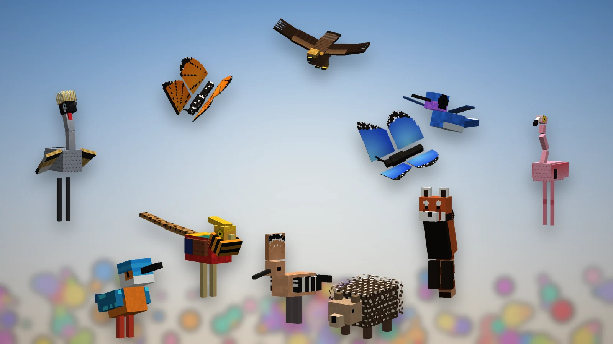
(agrandir l'image)
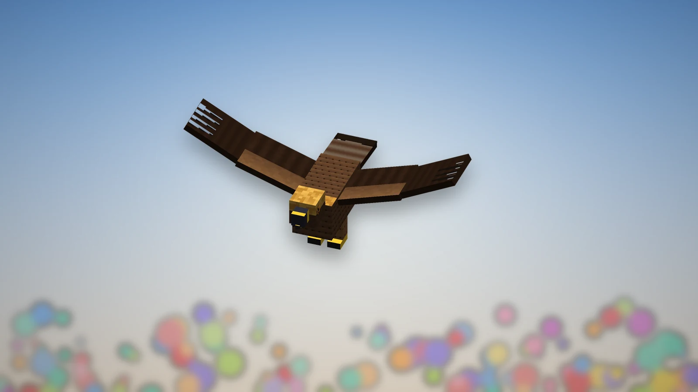
(agrandir l'image)
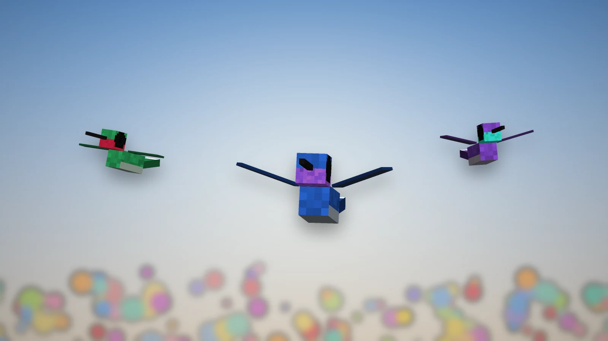
(agrandir l'image)
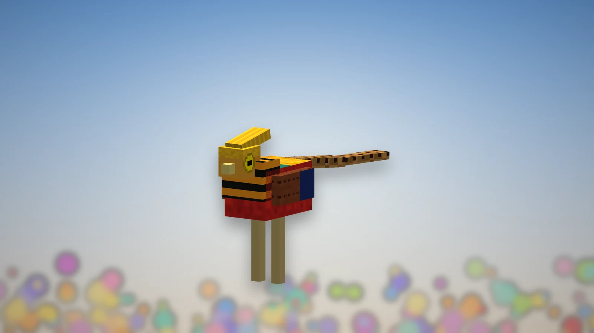
(agrandir l'image)
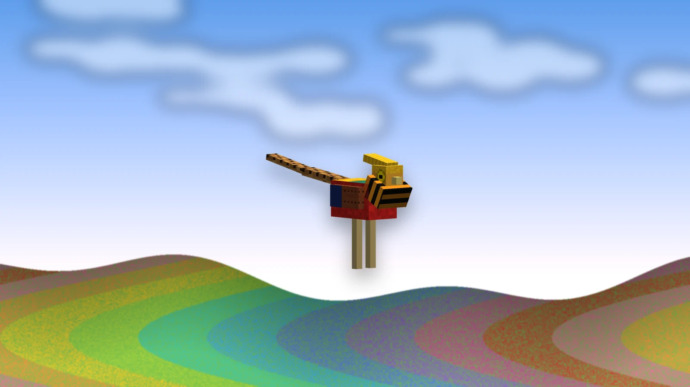
(agrandir l'image)
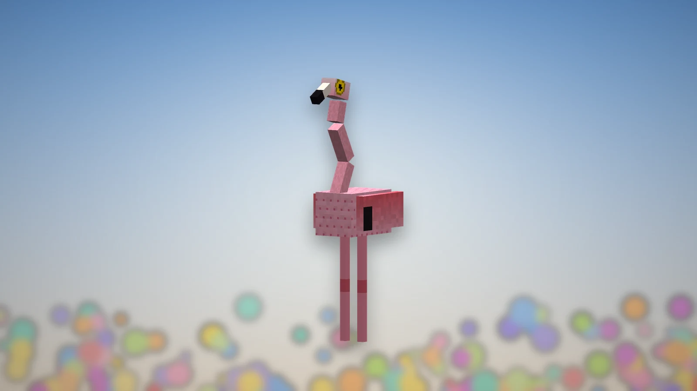
(agrandir l'image)
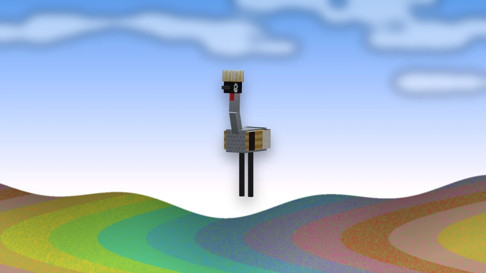
(agrandir l'image)
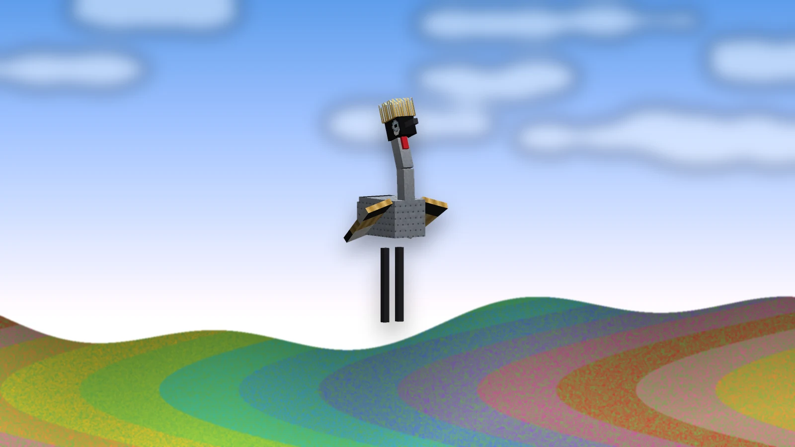
(agrandir l'image)
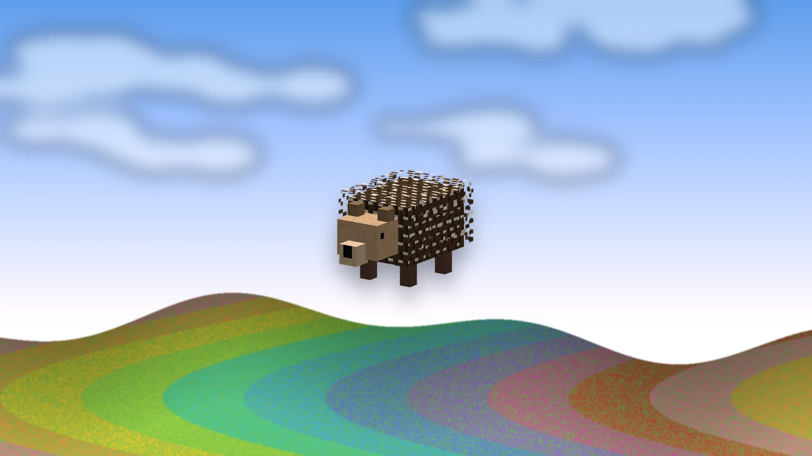
(agrandir l'image)
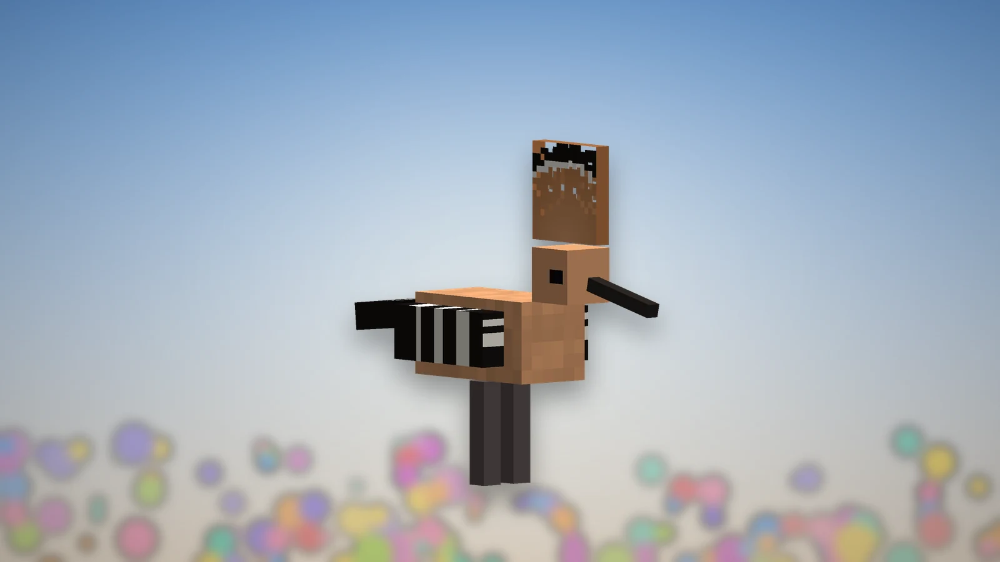
(agrandir l'image)
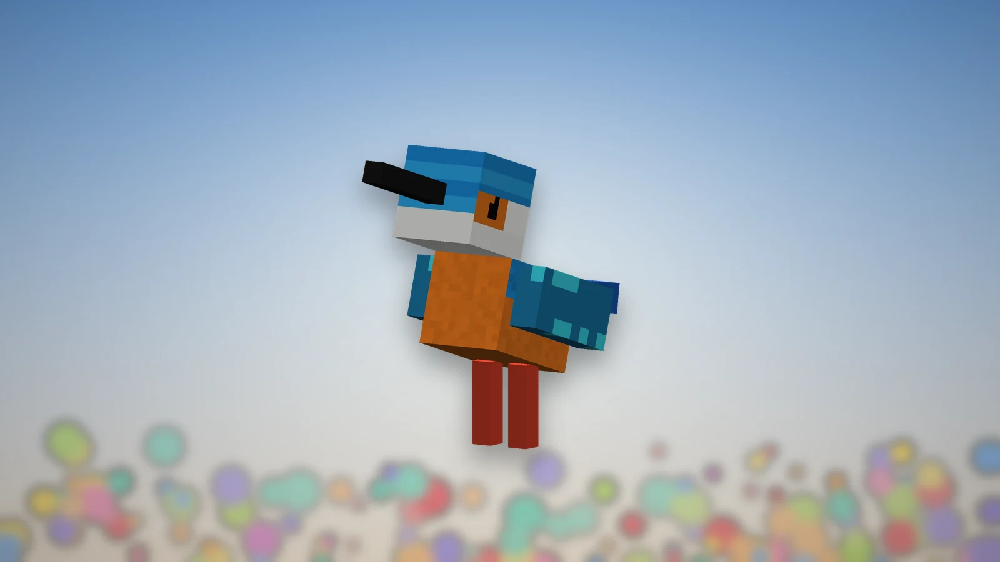
(agrandir l'image)
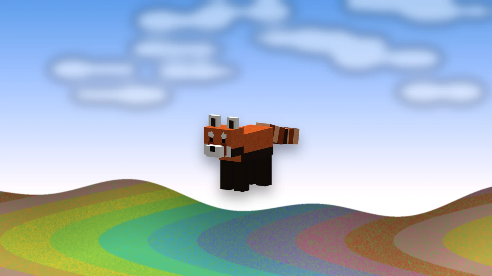
(agrandir l'image)
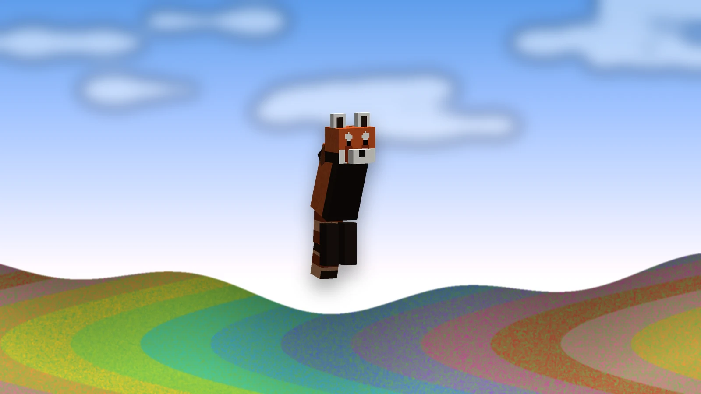
(agrandir l'image)
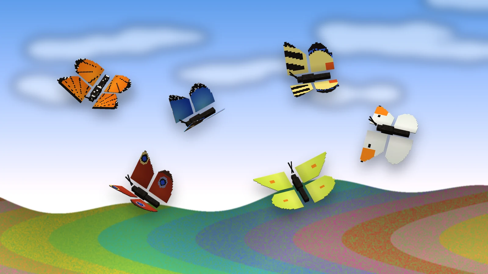
(agrandir l'image)| Créature | Où | Ce qu'elle fait | Mange, laisse |
|---|---|---|---|
| Papillon | partout où il y a des fleurs, le jour ; par nuées dans les Champs | Six espèces : monarque, morpho bleu, machaon, aurore, paon-du-jour, citron. Il vole en zigzag de fleur en fleur, s'y pose, ouvre et ferme les ailes au soleil, et s'envole dès qu'on approche - accroupi, on peut le regarder de près. Là où il s'est posé un moment, la fleur se ressème parfois dans l'herbe d'à côté. | — |
| Colibri | Champs, forêts de fleurs, cerisaies, jungles, prairies | Émeraude à gorge rubis, saphir, améthyste. Le plus rapide de tous : il file d'une fleur à l'autre, s'arrête net devant chacune, les ailes en un flou, et boit. Sa gorge scintille, même la nuit. Il ne se pose jamais. | — |
| Martin-pêcheur | rivières, marais, étangs des Champs | Il guette depuis une berge ou une branche au-dessus de l'eau, puis plonge comme une pierre : une gerbe d'eau, et le voilà revenu sur son perchoir. | plume |
| Faisan doré | Champs, forêts, forêts de fleurs, jungle de bambous | Une huppe d'or, une collerette orange rayée de noir, la poitrine écarlate, une queue plus longue que l'oiseau. Pour parader, il rabat sa collerette sur sa face comme un éventail. Effrayé, il détale et s'envole en un bouquet d'ailes. | graines ; plumes, poulet |
| Grue couronnée | Champs, savanes, marais, plaines | Grise, les ailes blanches, paille dorée et noires, une tête de velours noir à joue blanche et barbillon rouge, et une couronne de soies d'or. Les grues vont par deux et dansent : ailes grandes ouvertes, révérences, bonds - et l'autre répond. | graines, blé ; plumes |
| Flamant rose | étangs des Champs, mangroves, plages, savanes | Il patauge dans les hauts-fonds, la tête dans l'eau qu'il balaie, et dort sur une patte. | varech, morue ; plumes, teinture rose |
| Huppe fasciée | Champs, savanes, plaines | Cannelle, les ailes zébrées de noir et de blanc, un long bec courbe ; elle déploie sa huppe en éventail quand elle se pose, s'étonne ou parade. | graines ; plume |
| Hérisson | Champs, forêts, prairies, plaines | Approchez-le sans vous accroupir, ou frappez-le : il se roule en boule de piquants. En boule, il ne prend qu'un cinquième des coups, et une main nue qui le frappe se pique. | baies sucrées, champignons bruns |
| Panda roux | cerisaies, jungle de bambous, vieille taïga d'épicéas | Surpris, il se dresse sur ses pattes arrière, les pattes de devant levées, pour avoir l'air grand. Il s'assoit de temps en temps pour regarder le monde. | bambou, baies sucrées |
| Aigle royal | Champs, collines venteuses, prairies, pics, plateaux | Deux blocs et demi d'envergure. Il passe ses journées à tourner haut dans le ciel, sur ses ailes immobiles, en s'inclinant dans les virages ; quand un lapin se montre en bas, il replie les ailes et fond dessus. Le soir il se pose sur un point haut, et repart dès qu'on grimpe jusqu'à lui. | plumes |
Les papillons, colibris et martins-pêcheurs ne naissent pas avec le monde : ils viennent autour de vous, de jour, là où il y a des fleurs ou de l'eau - jusqu'à seize dans les Champs, cinq ailleurs - et s'en vont quand vous partez.